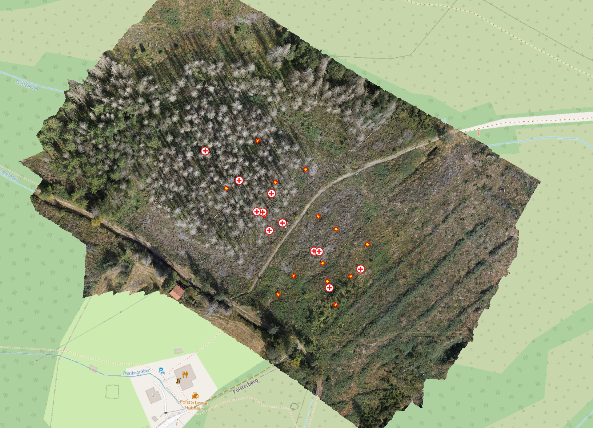

Why do we want to fill spatial gaps?
Quantitative spatial methods rely on the dependence structure of the phenomenon. While Euclidean proximity is a common default, process-defined neighborhoods and relevant covariates often explain spatial patterns more effectively, especially for gap-filling.
Lets look at our project region.

Distance and data representation
Let’s look more closely at proximity. What is it, exactly, and how can we express it so that space becomes analytically meaningful?
In general, spatial relationships are described by neighborhoods (positional) and distances (metric). For spatial analysis or prediction, we also need to quantify spatial influence—how strongly one location affects another. Tobler’s First Law of Geography captures one common objective: near things are more related than distant things. In many real cases spatial influence cannot be measured directly and must be estimated.
Neighborhood
Neighborhood is a foundational concept. Higher‑dimensional geo‑objects (areas) are neighbors if they touch (e.g., adjacent countries). For points (0‑D objects), neighborhood is commonly defined by distance, however choose k and radius to reflect process scale; consider directional or network-constrained neighborhoods (e.g., k nearest neighbors within a search radius).
Distance
Proximity analyses often ask about areas of influence or catchments—the spatial footprints of effects or processes.
Influence kernels. Specify a weight function \(w(d)\) (e.g., exponential or Gaussian) or a covariance model \(C(h)\). Estimate parameters (range/sill/nugget) from the data; allow anisotropy if effects propagate preferentially (e.g., along slope or wind). Combine process covariates for the mean, plus a spatial residual for remaining structure.
Because space can be discretized as vector or raster, distance computation differs accordingly. When contextual constraints are unknown, it is useful to begin with a simple metric such as *Euclidean distance and later refine to network distance, travel time, or cost distance** as the question demands. Also consider feature-space proximity (similar covariates) when processes are driven by environment more than location.
The key is operationalization: qualitative notions like “near” and “far” must be translated into a distance metric and units (meters, minutes, etc.). There is rarely a single “correct” choice—only measures more or less suitable for the objective—so defining a meaningful neighborhood relation for the objects of interest is critical.
Filling spatial gaps - the concepts of doing it
With the basics of distance and neighborhood in place, we can turn to interpolation/prediction of values in space.
For decades, deterministic techniques such as nearest neighbor, inverse distance weighting, and spline methods have been popular.
In contrast, geostatistical (stochastic) methods like kriging model spatial autocorrelation explicitly. Extensions such as external‑drift kriging and regression kriging combine covariates with the spatial variogram model.
More recently, machine learning (ML) approaches (e.g., random forest) have become common for environmental prediction, thanks to their ability to capture non‑linear and complex relationships. In addition spatial structure can be incorporated via coordinates, distance‑based features, spatial cross‑validation, and residual modeling, complementing geostatistical tools rather than replacing them.
Proximity: a general framework
To predict in space we must first define who can influence whom and how strongly:
- Neighborhood — which locations are eligible to interact (e.g., k-nearest, radius, directional, network/flow-aligned, feature-space).
- Metric — how separation is measured (Euclidean, anisotropic/geodesic, cost, network time, feature-space, spatio-temporal).
- Influence — how effect decays with separation (kernel weights or covariance/variogram), with optional anisotropy and barriers.
Process knowledge enters as:
- a mean component (covariates encoding mechanisms), and
- a spatial residual (autocorrelation left after the mean), which you model with an influence function consistent with the process and its characteristic scales.
Stepwise integration of process and scale
Step 0 — Baseline geometry. Start with simple, isotropic neighborhoods and Euclidean distance. Choose grid resolution consistent with observation support. Report a preliminary characteristic scale (search radius, k, or empirical range).
Voronoi polygons — dividing space geometrically
Voronoi polygons (Thiessen polygons) provide an elementary geometric definition of proximity. They partition space into regions that are closest to each generator point. In 2D, every location within a polygon is nearer to its seed point than to any other.
Voronoi tessellations mirror organizational principles seen in nature (e.g., plant cells) and human geography (e.g., central places per Christaller). Two assumptions usually apply: (1) nothing else is known about the space between sampled locations; and (2) the boundary between two samples is an approximation—a convenient abstraction rather than a physical discontinuity. Within each polygon, the attribute is implicitly treated as homogeneous.
If we know more about spatial relationships, we can go beyond purely geometric proximity.
Step 1 — Process in the mean. Add covariates that carry mechanism (elevation, radiation/SVF, LAD, land cover, distance to ridge, flow accumulation). This captures broad gradients and reduces bias.
Step 2 — Scale and direction in the residual. Fit a residual influence structure that matches the process: directional/anisotropic where flow or wind channels influence; cost/geodesic where uphill/roughness penalizes spread; barriers across ridges, walls, or water.
Step 3 — Nonstationarity where needed. Allow parameters to vary (local variograms, moving windows) or use flexible smoothers to accommodate gradual changes in scale or orientation.
Step 4 — Validation and applicability. Use spatial/block CV aligned with process (e.g., flow-aligned folds). Check area of applicability in feature space to avoid “near in XY, far in process.” Sensitivity-test metric, kernel, and scale choices.
What each method encodes (concept, process, scale)
Nearest Neighbor (NN)
- Proximity: Voronoi cells (closest site wins).
- Process assumption: Piecewise constant; no smoothing.
- Scale control: Implicitly set by station spacing.
- Use when: Quick gap diagnostic or very sharp local patchiness.
Inverse Distance Weighted (IDW)
- Proximity: Monotone kernel in Euclidean distance.
- Process assumption: Isotropic decay; no explicit uncertainty.
- Scale control: Power and search radius (higher power = shorter effective range).
- Use when: Simple, transparent weighting with mild smoothing.
Kriging (OK)
- Proximity: Variogram/covariance defines influence.
- Process assumption: Second-order stationarity of residual; supports anisotropy.
- Scale control: Variogram range(s), nugget; directional ranges for anisotropy.
- Use when: You want uncertainty and a principled spatial model.
Kriging with External Drift (KED)
- Proximity: Covariates in the mean + variogram on residuals.
- Process assumption: Mechanisms captured by covariates; remaining structure is correlated noise.
- Scale control: Covariate smoothness sets large-scale trend; residual variogram sets local scale.
- Use when: Strong drivers are known (radiation, elevation, LAD), but local correlation persists.
Thin Plate Spline Regression (TPS)
- Proximity: Smoothness prior via spline kernel; influence decays with distance and penalty.
- Process assumption: Broad, smooth fields (trend-like behavior).
- Scale control: Smoothing parameter (penalty) and basis complexity.
- Use when: Continuous, gently varying surfaces; robust baseline trend.
Triangular Irregular Surface (TIN)
- Proximity: Local planar facets on the Delaunay triangulation.
- Process assumption: Locally planar continuity with sharp breaks possible along edges.
- Scale control: Triangle density (data spacing) and any enforced smoothing.
- Use when: Elevation-like surfaces or where local planes are appropriate.
Generalized Additive Model (GAM)
- Proximity: Encoded through smooth functions of covariates (and optionally s(x,y)).
- Process assumption: Nonlinear process relationships in the mean; residuals ideally weakly correlated.
- Scale control: Basis dimension and penalties per smoother (feature-space scale); add spatial residual modeling if needed.
- Use when: Rich covariates, nonlinear effects, and desire to keep spatial residuals small.
Add this right after Generalized Additive Model (GAM):
Random Forest (RF)
- Proximity: Encoded indirectly via covariates (you can include s(x,y), distances, neighborhood stats, cost distances, etc. as features). Spatial dependence handled post-hoc via residual mapping if needed.
- Process assumption: Complex nonlinear relationships and interactions in the mean; no explicit spatial covariance or uncertainty model. Extrapolation beyond training feature space is weak—check area of applicability.
- Scale control: Through feature engineering (window sizes, multi-scale covariates), and tree hyperparameters (min node size, mtry, tree depth). Effective spatial scale emerges from the features you provide.
- Use when: Many and rich covariates, strong nonlinearities, and you want robust prediction without specifying a parametric mean. Pair with residual kriging if spatial autocorrelation remains or if you need uncertainty maps.
Minimal decision guide
- Only positions, need a fast baseline: NN → IDW → TIN (if local planes fit).
- Smooth trend dominates: TPS or GAM (covariates preferred).
- Clear drivers + local correlation: KED (covariates) + residual kriging.
- Uncertainty mapping required / correlation central: Kriging family (OK/KED).
- Directional/channelized processes: Use anisotropic/cost-based metrics in the residual stage.
- Rich covariates, nonlinear effects: GAM or RF (prefer RF when interactions dominate; add residual kriging if spatial correlation persists).
The map at http://earth-observation-network.github.io/EON2025/block4_5/swiss_models_one_legend_bluewhite.html contrasts six interpolation methods for precipitation in Switzerland (plus the Voronoi tessellation for reference).
Choosing an interpolation method: scales & processes
Think in terms of the process you want to capture and the scale at which it operates.
- Process & characteristic scale: What is the expected range/decay length of spatial dependence? Sample spacing should be finer than this scale; choose kernels/variogram ranges to match it and avoid aliasing.
- Support & resolution: Are observations point‑like or area‑averaged? Align prediction grid (cell size) and smoothing with observation support; be explicit about change‑of‑support.
- Stationarity & anisotropy: If trends or directional effects exist (e.g., along valleys/ridges), include drift/covariates, use local models, or fit directional variograms—don’t assume isotropy.
- Sampling layout vs gradients: Ensure coverage across major drivers (elevation, aspect, land cover). Space‑filling/stratified designs beat clustered convenience samples.
- Sample size vs model complexity: Parameter‑rich models (nested variograms, many ML features) need more data. Keep models as simple as the data allow.
- Uncertainty & validation: Use spatial cross‑validation; map predictions and uncertainty (kriging variance, ensemble spread). Report MAE/RMSE at the scale of use.
- Scale interactions (MAUP): State analysis scale explicitly; resample/aggregate covariates consistently to avoid scale mismatch.
Hands‑on: our data
Download the exercises repository (as a ZIP), then unpack it locally. Open the .Rproj in RStudio and start with the provided exercises.